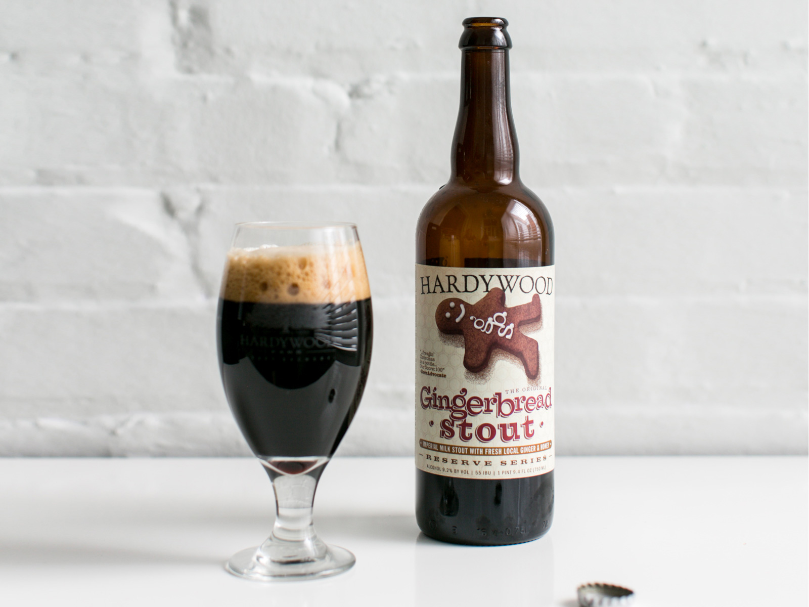

HOME
STOUTS
Gingerbread Stout
Hardywood Brewery
Made with baby ginger from Casselmonte Farm and wildflower honey from Bearer Farms, Hardywood Gingerbread Stout captures the terroir of Central Virginia in a rich, creamy libation with a velvety mouthfeel and an intriguing evolution of notes from milk chocolate and vanilla, to honeycomb and cinnamon, to a snap of ginger in the finish.
Located in Richmond, VA, Hardywood brews both innovative and traditional ales and lagers at the highest caliber, with steadfast quality assurance standards.
Check out their site HERE 